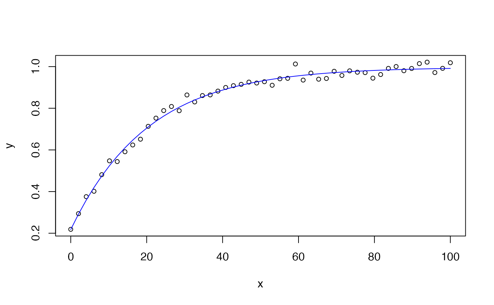

These functions provide Exponential Variogram Model equation (varexp.fun()), as well as the self-starters for the nls() (SSvarexp()) and drc::drm() functions (DRCvarexp()).
Arguments
- x
A numeric vector of non-negative lag distances.
- nug
The nugget: the semivariance at zero lag distance (intercept).
- psill
The partial sill: the difference between the sill (total variance) and the nugget.
- range
The range parameter controlling the rate of increase. The practical range at which ~95 percent of the sill is reached is approximately \(3 \times \text{range}\).
Value
varexp.fun() and SSvarexp() return a numeric value, while DRCvarexp() returns a list containing the nonlinear function and the self starter function.
Details
The model is defined as:
$$y = \text{nug} + \text{psill} \left(1 - e^{-x / \text{range}}\right)$$
where nug is the nugget (semivariance at zero lag), psill is
the partial sill (difference between sill and nugget), and range
controls the rate of increase. The practical range at which ~95 percent of
the sill is reached is approximately \(3 \times \text{range}\).
This is a standard exponential variogram model commonly used in geostatistics to describe spatial autocorrelation. Unlike the spherical model, it approaches the sill asymptotically.
See also
Other non-linear functions, self-starters:
chaprich.fun(),
exp3.fun(),
expneg.fun(),
expneg2.fun(),
invpoly1.fun(),
invpoly2.fun(),
invpoly3.fun(),
kostmod.fun(),
vargauss.fun(),
varsph.fun()
Examples
x <- seq(0, 100, length.out = 50)
y <- varexp.fun(x, nug = 0.2, psill = 0.8, range = 20) + rnorm(50, sd = 0.02)
df <- data.frame(x = x, y = y)
mod = nls(y ~ SSvarexp(x, nug, psill, range), data = df)
summary(mod)
#>
#> Formula: y ~ SSvarexp(x, nug, psill, range)
#>
#> Parameters:
#> Estimate Std. Error t value Pr(>|t|)
#> nug 0.21752 0.01217 17.88 <2e-16 ***
#> psill 0.77961 0.01162 67.08 <2e-16 ***
#> range 20.40539 0.68364 29.85 <2e-16 ***
#> ---
#> Signif. codes: 0 ‘***’ 0.001 ‘**’ 0.01 ‘*’ 0.05 ‘.’ 0.1 ‘ ’ 1
#>
#> Residual standard error: 0.02003 on 47 degrees of freedom
#>
#> Number of iterations to convergence: 4
#> Achieved convergence tolerance: 1.539e-08
#>
plot(x, y, cex = 0.8)
lines(x, predict(mod), col = 'blue')

if (FALSE) { # \dontrun{
mod = drc::drm(y ~ x, data = df, fct = DRCvarexp())
summary(mod)
plot(mod, log = "")
} # }